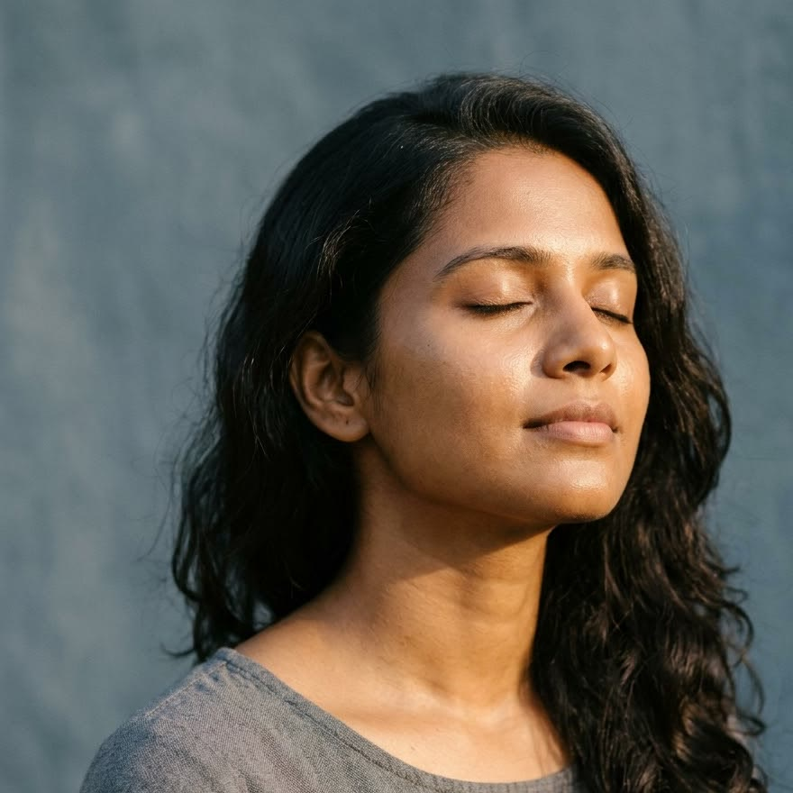
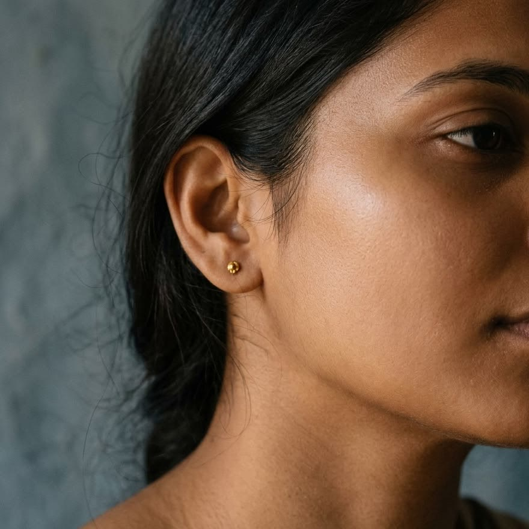
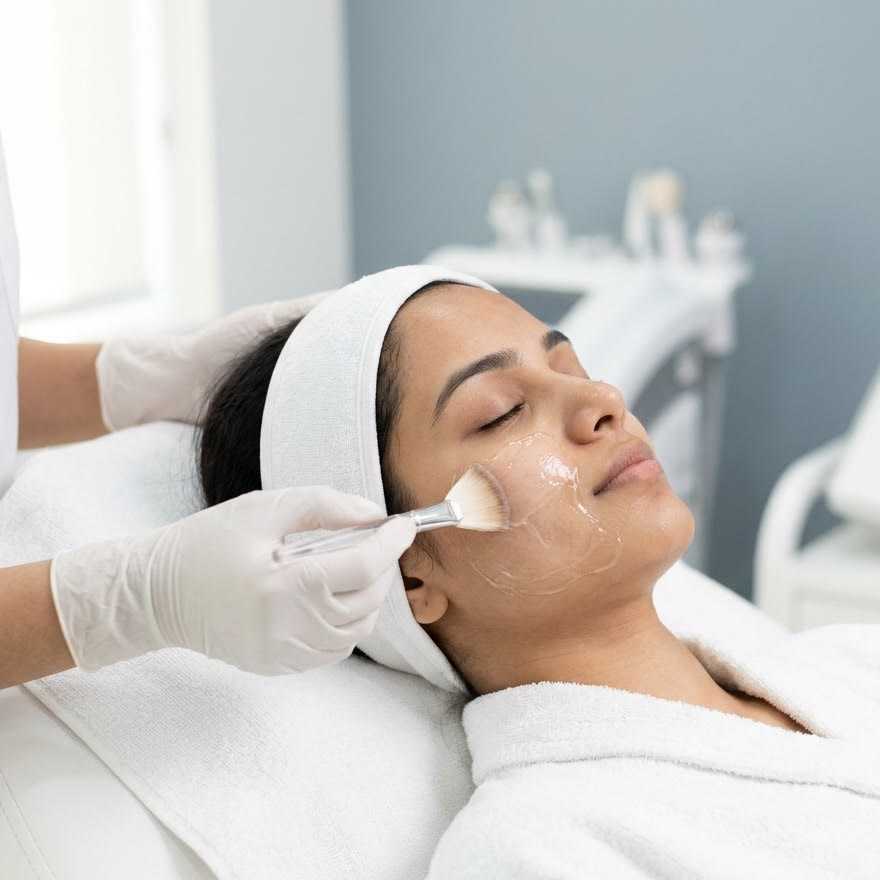

Hydrafacial for Skin brightening this Summer Season
Hydrafacial is a popular and innovative skincare treatment that offers a multi-step approach to rejuvenating and enhancing the skin’s appearance. During a Hydrafacial session, the skin is cleansed, exfoliated, and infused with nourishing serums, all while impurities are gently extracted from the pores. This non-invasive procedure is highly customizable, allowing skincare professionals to tailor it…

What is MNRF and benefits of MNRF Treatment for Acne Scars
MNRF stands for Microneedling with Radiofrequency. It's a cosmetic procedure that combines two techniques: microneedling and radiofrequency energy.

PCOS Hair fall treatment in rajahmundry
Polycystic Ovary Syndrome (PCOS) is a hormonal disorder that can cause a variety of symptoms, including irregular periods, acne, weight gain, and hair loss. Hair loss associated with PCOS is often due to the elevated levels of androgens (male hormones) in the body. What is PCOS? Polycystic Ovary Syndrome (PCOS) is a common hormonal disorder…

Alopecia types and treatment in Rajahmundry
Alopecia treatment in Rajahmundry ~ Dr. Sahitya Reddy

PDO threads and its benefits
PDO theradlift and its benefits

Laser Tattoo Removal Treatment Rajahmundry
Tattoo removal is a specialized medical procedure designed to erase or fade the appearance of previously inked tattoos on the skin’s surface. Tattoos involve injecting colored pigments into the deeper layers of the skin, and tattoo removal techniques are specifically developed to break down these pigments, gradually diminishing or eliminating the tattoo’s visual presence. How…

Botox for Beginners: What You Need to Know?
Botox treatment and what to expect?

What is MNRF- Microneedling with Radiofrequency
Numerous individuals grapple with dissatisfaction stemming from imperfections in their skin, be it the emergence of wrinkles or a face marred by acne. Seeking solutions, they turn to medical interventions in pursuit of flawless, blemish-free skin. Enter MNRF treatment, the cutting-edge cosmetic procedure designed to address these concerns and bestow a radiant and flawless complexion…

Chemical Peels and best peel for your skin
Chemical peel and types of peels according to your skin concerns

The Impact of Diet on Skin Health: Nourishing Your Way to a Radiant Complexion
As a dermatologist, I often emphasize the crucial connection between diet and skin health. While skincare products play a vital role, the foods you consume can significantly impact the condition of your skin. In this article, we’ll explore the relationship between diet and skin health, highlighting key nutrients that contribute to a radiant complexion. The…
Unlocking the Secrets to Healthy and Radiant Skin: A Dermatologist’s Guide to Skincare Essentials
Skincare guide as per dermatologist
Book a consultation
It starts with a conversation.
Tell us what is bothering you. Mon to Sat, 9:30 am to 8 pm. Sun, 10 am to 12 noon.